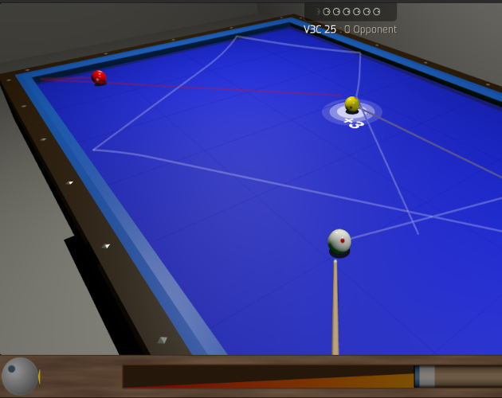

처음이신가요? 작은 5자 테이블로 구성된 비기너 모드 ⬀ 로 가볍게 시작해보세요.
설치 없이 브라우저에서 바로 실행 · 완전 무료 · 모바일/PC 모두 지원
자신의 큐공(수구)으로 상대 공을 포함한 두 개의 공을 모두 맞히기 전에 쿠션을 세 번 이상 접촉시키면 득점하는 캐롬 당구입니다. 회전(스핀)과 쿠션 활용이 승부의 핵심으로, 물리적 이해와 기량이 필요한 당구의 최정상 종목입니다.
한국에서 사랑받는 네 개의 공으로 하는 캐롬 당구(4구)입니다. 수구로 나머지 두 개의 목구를 모두 맞히면 득점하며, 쿠션을 먼저 맞고 성공하면 더 높은 점수를 얻습니다. 규칙이 단순해 입문자도 금방 즐길 수 있지만, 고득점을 위해서는 정교한 배치와 회전 조절이 필요합니다.
마우스, 터치 스크린 또는 키보드로 플레이할 수 있습니다:
| 조작 | 설명 |
|---|---|
| ⇦ ⇨ | 조준 (Aim) |
| Control + ⇦ ⇨ | 정밀 조준 |
| ⇧ ⇩ | 밀어치기 / 끌어치기 (상·하단 회전) |
| Shift + ⇦ ⇨ | 사이드 스핀 (좌우 회전) |
| Space | 타격 - 길게 누르면 파워가 증가합니다. |
| A | 조준 가이드 토글 |
| M | 맛세(Massé) 각도 조절 |
| O | 카메라 뷰 전환 |
| F | 전체 화면 |
| 마우스 휠 / 더블 클릭 | 샷 파워 조절 / 타격 |
모바일에서는 화면을 드래그해 조준하고, 파워 게이지를 이용해 타격할 수 있습니다.
온라인 로비에 접속하면 현재 접속 중인 플레이어 목록에서 상대를 선택해 바로 대국할 수 있습니다. 게임이 끝나면 로비로 돌아와 다른 상대에게 도전할 수도 있습니다. 접속자가 없을 때는 봇(ClawBreak, TheFarJaw)과 언제든 연습 대국을 즐기세요.